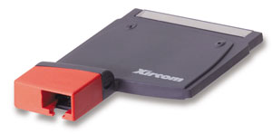
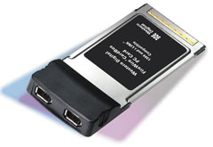
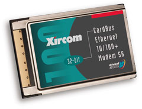
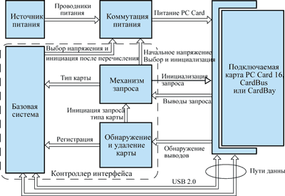

Андрей Борзенко
Мобильные системы продолжают совершенствоваться, и не только в том, что связано с разнообразием конструктивных решений или снижением энергопотребления; развиваются и технологии подключаемых компонентов. Дело в том, что подобные устройства должны соответствовать настольным ПК или даже превосходить их по компактности, энергетической эффективности и функциональности. В переносных системах будущего не исчезнет потребность в средствах расширения, например, подключаемых модулях различных форм-факторов, которые используются как для обеспечения стандартных конфигураций систем, так и для быстрой модернизации.
Эволюция межкомпонентных соединений
Вместе с появлением портативных компьютеров остро встал вопрос об универсальном и компактном интерфейсе для подключения внешних устройств. Созданная в 1989 г. организация Personal Computer Memory Card International Association (PCMCIA, http://www.pcmcia.org) утвердила первую спецификацию такого интерфейса. Аббревиатура PCMCIA вызывала много нареканий своей труднопроизносимостью. Существовала даже шутливая интерпретация PCMCIA, как "People Can't Memorize Computer Industry Acronyms" ("Люди не в состоянии запомнить компьютерные аббревиатуры").
Первая версия стандарта PCMCIA (release 1.0) была введена в августе 1990 г. и поддерживала практически все типы памяти: статическую SRAM, псевдостатическую PSRAM, постоянную (масочную) ROM; однократно программируемую постоянную PROM (или OTPROM - One-Time Programmable ROM); стираемую ультрафиолетом перепрограммируемую UV-EPROM (UltraViolet Erasable PROM); электрически стираемую перепрограммируемую EEPROM (Electrically Erasable PROM) и флэш-память. Работа ассоциации PCMCIA над одноименной спецификацией проходила в тесном контакте с организацией JEIDA (Japan Electronic Industry Development Association) в Японии. Поэтому стандарт часто называли PCMCIA/JEIDA.
Уже в сентябре 1991 г. появилась вторая версия спецификации (PCMCIA 2.0), в которой появились поддержка устройств ввода-вывода, дополнительный сервис для модулей флэш-памяти, поддержка модулей с "двойным" напряжением питания (5 и 3 В) и так называемый XIP-механизм (eXecute-In-Place). Заметим, что XIP-механизм обеспечивал выполнение программ непосредственно в пространстве PCMCIA-модуля памяти, экономя тем самым системную память компьютера.
Надо отметить, что вместе с версией 2.0 ассоциация PCMCIA разработала новую спецификацию SSIS (Socket Services Interface Specification), которая устанавливала стандартный набор системных вызовов для работы с PCMCIA-модулями. SSIS была выполнена в виде BIOS, что позволяло сохранить независимость используемых аппаратных средств, но гарантировать при этом программную совместимость. Более высокий уровень программных операций (так называемый Card Services) с PCMCIA-модулями был предложен только в начале 1992 г.
Новая версия спецификации позволяла называть "труднопроизносимый" PCMCIA-модуль просто PC Card. Стандарт для связи между PC Card и соответствующим устройством (адаптером или портом) компьютера определял 68-контактный механический соединитель. На нем было выделено 16 разрядов под данные и 26 разрядов под адрес, что позволяло непосредственно адресовать 64 Мбайт памяти. Во второй версии спецификации PCMCIA было определено три типа габаритных размеров для PC Card (Type I, Type II и Type III). Два первых ограничивали размеры PC Card до 54 мм (2,12 дюйма) в ширину и 85,6 мм (3,37 дюйма) в длину. PCMCIA-модули, соответствующие Type I, должны были иметь толщину 3,3 мм, а соответствующие Type II - 5,0 мм в середине и 3,3 мм по краям. Это обеспечивало геометрическую совместимость PC Card первого и второго типов. PC Card Type III имеют толщину 10,5 мм и, разумеется, непригодны для использования в слотах для модулей Type I и II.
Есть два разных способа подключения стандартных вилок RJ11/RJ45. Навесной кабель подключается с помощью плоской специальной вилки. На другом конце этого кабеля имеется обычный разъем сетевого адаптера или модема. В этом случае существует вероятность, что маленькие и хрупкие разъемы на PCMCIA-карте будут повреждены. Для решения этой проблемы некоторые фирмы-производители карт создали так называемые карты с "настоящими портами" (RealPort) (рис. 1). Они, как правило, занимают два посадочных места для карт формата Type II или Type I. Разъем кабеля сетевого адаптера (модема) можно непосредственно вставлять в такую карточку, но при этом теряется свободный слот для карты Type II.
|  | Рис. 1. Карта RealPort.
|
Для увеличения пропускной способности шины PCMCIA в начале 1995 г. была предложена спецификация CardBus, представлявшая собой расширение шины PCI для устройств PC Card. Проведя параллель между шинами блокнотных и настольных ПК, можно сказать, что интерфейс CardBus - это эквивалент шины PCI, а интерфейс PCMCIA - аналог традиционной 16-разрядной шины ISA. Платы CardBus поддерживали 32-разрядный обмен данными на частоте 33 МГц. В этом конструктиве и сегодня выпускаются 100-Мбитные сетевые карты, интерфейсные платы SCSI и другие устройства, требующие быстрого обмена по шине (рис. 2, 3).
|  |  |
| Рис. 2. Жесткий диск FireWire CardBus.
|
Рис. 3. Комбинированная карта CardBus.
|
Чтобы улучшить управление потреблением энергии, ассоциация PCMCIA адаптировала в стандарте CardBus соответствующие спецификации интерфейса PCI. В результате новый стандарт позволил увеличить продолжительность непрерывной работы от батарей, сократить энергетические затраты, уменьшить нагрев и рассеиваемую мощность. В современных системах технология CardBus обеспечивает "горячее" подключение PCI-компонентов и позволяет тесно интегрировать их в базовую систему, обеспечивая при этом простоту установки пользователем. Высокая производительность (до 132 Мбайт/с), низкое питающее напряжение (3,3 В) и присущий PCI механизм управления питанием - вот характеристики, которые делают технологию CardBus оптимальной для мобильных систем.
Сегодня технологии PCMCIA активно используются в мобильных вычислительных системах - от высокопроизводительных полноразмерных мобильных компьютеров до сверхпортативных специализированных устройств, таких как электронные записные книжки и фотоаппараты. Семейство PC Card объединяет 16-разрядные платы, используемые в устройствах с невысокими требованиями к производительности, и 32-разрядные PCI-подобные платы CardBus, которые способны удовлетворить высокие требования к подсоединению подключаемых компонентов.
Современные мобильные компьютеры предоставляют все необходимые функции для самых разнообразных приложений - для бизнеса, потребительского рынка и развлечений. Во многих, если не в большинстве, компьютерах в базовой системе размещаются модем и LAN-интерфейс - компоненты, которые до недавнего времени подключались как платы PC Card. Таким образом, создаются полные и самодостаточные системы.
В современных мобильных системах интерфейс PC Card применяется для тех же целей, что и разъемы шин расширения для подключаемых компонентов в настольных системах. Внутреннее пространство мобильного компьютера распределено очень экономно, поэтому задача "горячего" подключения устройств, доступности извне и возможности самонастройки решается средствами плат PC Card, которые обеспечивают подходящую для мобильных систем базовую поддержку подключаемых компонентов.
В будущем потребность добавления в мобильные системы новых функций (например, поддержки беспроводной связи) не исчезнет. Все существующие системы предлагают в лучшем случае частичное, временное решение, не удовлетворяющее всем современным требованиям. Гнезда для подключаемых компонентов и шины позволяют владельцу ПК пользоваться устройствами и технологиями, которых еще не было на момент проектирования или покупки машины. Сегодня трудно точно предсказать, какие конкретные устройства или приложения потребуются в компьютерах завтрашнего дня, но одно известно наверняка: технологии для мобильных систем на достигнутом уровне не останутся - это было бы противоестественно и противоречило бы всей истории компьютерной отрасли.
Такие возможности, как ADSL- или беспроводные радиомодемы, необходимы мобильным системам для работы в быстро изменяющихся прикладных областях. Сменные устройства позволяют применять новые технологии в мобильных системах без того риска, который всегда присутствует при реализации устройств на системной плате (например, интегрированных в составе набора микросхем). Со временем, когда потребность в этих технологиях вынудит производителей реализовать их поддержку на уровне системной платы, интерфейс для сменных устройств не останется без дела - он будет задействован для компонентов следующего поколения.
Возможность подключения компонентов к мобильным системам особенно важна для поддержки стандартных конфигураций, например, в тех корпоративных системах, параметры которых жестко задаются и контролируются ИТ-менеджерами. Даже самодостаточные системы будущего можно будет привести в соответствие с корпоративными стандартами, заменяя подключаемые компоненты. Сокращение числа типов поддерживаемых систем позволяет компаниям повысить их надежность и снизить совокупную стоимость.
Последовательные решения
Не секрет, что развитие компьютерных систем завтрашнего дня происходит в направлении технологий ввода-вывода, основанных на популярных последовательных шинах. В тенденциях развития архитектуры новых портативных компьютеров также заметно влияние растущих возможностей последовательных шин. Кроме того, вероятна замена в будущем единой широкой параллельной шины на несколько более мелких последовательных интерфейсов. Причина такой смены акцентов в том, что у последовательных шин невысоки требования к количеству контактов. Помимо малого числа выводов, у наборов последовательных шин есть другие, менее очевидные преимущества.
Множественным последовательным потокам данных между компонентами может потребоваться большая пропускная способность, чем в состоянии обеспечить одна параллельная шина, совместно используемая огромным количеством подсистем. Такая шина зачастую работает непроизводительно по причине неэффективного протокола (например, из-за переизбытка арбитражных операций) - выделенные или слабо нагруженные последовательные шины с такими трудностями не встречаются. Кроме того, последовательные шины допускают передачу данных между отдельными парами конечных точек, позволяя не загружать единую (широкую) шину трафиком, который лучше пересылать локально.
Многие современные последовательные шины поддерживают выделение гарантируемой ширины пропускания для отдельных пар источник - приемник. Такой изохронный режим очень важен для успешной транспортировки данных, для которых недопустима временная задержка, например, звука или видео. Более ранние параллельные шины этого механизма не поддерживают и потому менее пригодны для обслуживания важных мультимедиа-данных, которые обычно обрабатываются устройствами бытовой электроники и пересылаются через Интернет.
На сегодняшний день существуют две перспективные последовательные шины для подключения периферийных устройств: USB (Universal Serial Bus) и IEEE 1394 High Performance Serial Bus. Существуют и другие последовательные шины, пригодные для мобильных систем, однако эта пара, по мнению экспертов, наиболее многообещающа для подключаемых компонентов. Напомним, что USB - это стандарт периферийной шины, ориентированный на ПК (т. е. на модель с четко выделенной центральной системой); он обычно поддерживается как в настольных, так и в мобильных компьютерах. Стандарт USB разработан отраслевым консорциумом компаний, среди которых Intel, Microsoft, Compaq, NEC, DEC, IBM и Northern Telecom. Сегодня USB-IF (USB Implementer's Forum), сообщество компаний, участвующих в разработке спецификаций USB, объединяет несколько сотен производителей вычислительной техники.
Шина USB состоит из иерархии концентраторов, или точек подключения USB-устройств. На базовой системе имеется порт корневого концентратора, который выполняет роль "корня" "дерева" шины. Управляющие пакеты и пакеты с данными пересылаются по "веткам" этого дерева между базовой системой и отдельными USB-устройствами.
Порты USB-шины способны обеспечить определенное ограниченное питающее напряжение для устройств с питанием через кабель. Порты малой мощности обеспечивают ток 100 мА, а высокой - до 500 мА при напряжении 5 В. USB-устройства с независимым питанием не нуждаются в питании от USB-шины, хотя разрешается выделение ограниченной мощности для перечисления (т. е. для идентификации и классификации) и конфигурирования устройств. В любом случае питание через основной кабель - полезная возможность шины.
Выпущены три версии спецификации USB: 1.0, 1.1 и 2.0. Версия 1.1 - это просто исправление начального варианта стандарта. Версия 2.0 была принята в апреле 2000 г. Она предусматривает существенное увеличение быстродействия по сравнению с USB 1.x и обратно совместима с устройствами на базе USB 1.1. Версии 1.x поддерживают быстродействие 12 Мбит/с, версия 2.0 - 480 Мбайт/с. Это 40-кратное повышение скорости передачи данных позволяет существенно расширить сферу применения USB.
У всех версий USB единый набор механизмов управления питанием, в том числе механизмы управления питанием через основной кабель, отключения и приостановки/возобновления работы порта. Последняя возможность позволяет переводить USB-порты (а значит, и подключенные концентраторы и устройства) в "спящее" (suspend) состояние. Вывести порт из этого состояния могут определенные события на "спящем" устройстве или в базовой системе.
Поддержка USB на мобильных ПК обычно реализована в базовом наборе микросхем; в самом ближайшем будущем аналогичным образом будет поддерживаться и USB 2.0.
В настоящее время производители мобильной техники оснащают системы поддержкой USB и по мере развития IEEE1394 обеспечат поддержку этого стандарта. На настоящем этапе уже возможно начать переход от PCI и CardBus к USB и IEEE1394. В будущем такой переход станет необходимостью, устаревшие стандарты будут вытесняться. Причем данный процесс должен сопровождаться упрощением конструкции и снижением стоимости устройств.
Некоторые особенности CardBay
В марте 2001 г. ассоциация PCMCIA выпустила стандарт для карт четвертого поколения - CardBay, где в качестве базовой технологии выбрана шина USB (рис. 4). Подключаемые компоненты CardBay - это близкие "родственники" сегодняшних плат PC Card. Хотя сейчас невозможно назвать все функции, которые в будущем будет поддерживать CardBay, уже сегодня можно сказать, что один из классов устройств, нуждающихся в этой шине, - это усовершенствованные стандартные и беспроводные модемы, в настоящее время работающие на USB-шине. Аппаратные устройства защиты (например, для быстрого и безопасного шифрования/расшифровки или аутентификации при доступе к Интернету и в электронной коммерции) - вот еще один пример возможного применения CardBay. Другая область применения CardBay - компактные устройства памяти, такие как USB-адаптеры для многих популярных карт памяти, используемых в плейерах и фотоаппаратах.
|  |
| Рис. 4. Плата PC Card с архитектурой CardBay.
|
Так же, как сейчас PCI применяется в качестве коммуникационной технологии в CardBus, шина USB (или, возможно, IEEE1394) в будущем будет применяться в технологии CardBay. CardBay поддерживает все имеющиеся разновидности USB. Последовательный USB-разъем с малым числом выводов как нельзя лучше подходит для существующего соединителя CardBus, причем остается еще вполне достаточное количество свободных выводов для заземлений, снижающих уровень электромагнитных помех, а также управляющих и конфигурационных соединений и контактов для будущих расширений.
В CardBay появится еще одна существенная возможность - Vcore, дополнительный источник питания плат. В будущем новые платы получат доступ к двум базовым источникам питания: напряжение Vcc - для питания интерфейса платы и других "высоковольтных" функций, а Vcore - для питания внутренних базовых кремниевых подсистем и низковольтных микросхем. Вывод Vcore заменяет собой Vpp - стандартный и редко используемый источник питания плат.
CardBay по существу заменяет существующий интерфейс CardBus на USB, сохраняя физический разъем CardBus и формат платы PC Card. Поддерживаются все три режима работы USB 2.0 - низко-, полно- и высокоскоростной. Как видно из рис. 4, в архитектуре CardBay предусмотрены механизмы обнаружения платы и управления питанием, а кроме того добавлена функция опроса выключенной карты для определения возможностей плат расширения CardBay.
Стандартные механизмы обнаружения платы работают без изменений. Уникально то, что в платах CardBay реализованы ранее зарезервированные комбинации выводов для контроля напряжения и сигналов обнаружения платы. В новой схеме кодировки предусмотрено переопределение исходных требований плат PC Card по напряжению. На платах CardBay выводы Vpp переопределяются на Vcore.
Исходная конфигурация выводов Vcc и Vpp/Vcore переопределяется в процессе опроса платы CardBay. При обнаружении платы CardBay контроллер устанавливает общий управляющий вывод в состояние высокого уровня сигнала, после чего приступает к считыванию выводов опроса SQRY[1::10]. В CardBay реализована позитивная логика выводов: поддерживаемые функции подключаются к управляющему выводу, а незадействованные заземляются, и им присваивается значение "0". Таким образом, выводы запроса считывают состояние управляющего вывода опроса ("0" или "1").
В начальной реализации CardBay два сигнальных вывода опроса будут использоваться для определения рабочих напряжений Vcc и Vcore, четыре вывода - для определения функционального типа платы, а остальные остаются в резерве и заземляются. При определении напряжения одна комбинация сигналов обозначает Vcc = 3,3 В и Vcore = 1,8 В, а другая - Vcc = 5 В и Vcore = 3,3 В. Оставшиеся две комбинации зарезервированы будущее. Для определения типа платы пока задана лишь одна комбинация, соответствующая базовой поддержке интерфейса USB; оставшиеся 15 комбинаций остаются в резерве.
В процессе декодирования опроса базовое питание на плату CardBay не подается. Расшифровав корректную комбинацию параметров питания, базовая система направляет на плату соответствующие интерфейсные сигналы и затем может без опасений прикладывать питающее напряжение. Поскольку интерфейс основной системы - это просто USB-сигналы данных, после подачи питания на плате CardBay PC Card инициируется интерфейс и начинается процесс перечисления в соответствии с функциональными спецификациями USB. Поскольку основная система подает питание на CardBay через питающие контакты PC Card, плата CardBay PC Card должна сообщить о себе как об устройстве с автономным питанием.
Опрос платы CardBay коренным образом отличается от аналогичного процесса в PC Card или CardBus. Обычно роль контроллера разъема в определении требований платы минимальна. Однако в CardBay контроллер выступает важным участником конфигурирования и инициации платы. После обнаружения загрузки платы CardBay в гнездо контроллер подает сигнал на служебный контакт опроса. Выждав определенное время, он считывает контакты опроса. Далее контроллер обеспечивает механизм коммутации выходных сигналов платы CardBay с соответствующими шинами. Это может быть простой механизм (например, выделенный контакт для внешних коммутаторов), или же контроллер может брать на себя функции концентратора базовой системы либо контроллера порта, выполняя дополнительные, ранее ему не свойственные функции. После подключения соответствующего интерфейса контроллер должен приложить к плате напряжение Vcc и Vcore.
Чтобы снизить уровень шумов и повысить надежность сигналов, высокопроизводительные пути данных окружены изолированными заземленными проводами. В некоторых случаях логические провода выполняют в процессе работы функцию изолированной "земли".
В соответствии с технологией PC Card платы CardBay PC Card и гнезда поддерживают необходимые функции "горячей" вставки и удаления. В дополнение к встроенным USB-механизмам обнаружения и удаления, которые полностью поддерживаются в CardBay, доступны и стандартные методы обнаружения/удаления в соответствии со спецификацией PC Card.
Важно отметить, что для обнаружения, инициализации и работы CardBay PC Card не нужно никакого особого драйвера или кода операционной системы. Это существенное преимущество, заключающееся в автоматическом обнаружении и подключении платы контроллером CardBay и дополнении существующей технологии последовательной шины USB структурой и протоколом класса устройства. После подключения (т. е. фактически после присоединения к разъему USB) плата CardBay PC Card работает как обычное USB-устройство с соответствующими протоколами синхронизации и передачи пакетов, функционалом устройства и механизмом управления питанием.
По определению реализация гнезда CardBay поддерживает спецификации CardBus и PC Card-16. Соединитель CardBus для CardBay-устройств дает возможность использовать наследуемые платы PC Card. Так же, как это сейчас делается с PC Card-16 и CardBus, выводы интерфейса динамически переопределяются после идентификации вставленной платы (плата опрашивается непосредственно после ее установки в гнездо). Таким образом, один соединитель CardBus способен принять четыре различных вида устройств: PC Card-16, CardBus, карту со специальным пользовательским интерфейсом и CardBay.
С точки зрения приложений технология CardBay может оказаться полезной для широкого диапазона решений. В коммуникационных и сетевых устройствах, особенно тех, в которых USB используется в качестве интерфейса с базовой системой, будут важны такие преимущества решений на базе CardBay, как простота и легкость в работе. Среди применений CardBay для связи и поддержки сетей - аналоговые модемы для передачи данных, IEEE 802.11 для беспроводных ЛВС, Bluetooth для беспроводных персональных сетей (Personal Area Network, PAN) и GPRS для беспроводных глобальных сетей. Адаптеры малоформатных плат памяти с поддержкой CardBay обеспечат в портативных компьютерах переход от существующих USB-адаптеров плат памяти, популярных на рынке настольных систем. Благодаря CardBay появятся новые возможности у таких плат памяти, как Smart Media, MultiMediaCard (MMC), Secure Digital (SD) Memory Card и Memory Stick. Устройства чтения смарт-карт и ряд других устройств защиты (например, сканеры отпечатков пальцев или модули управления доступом) также могут работать через интерфейс USB - таким образом, у CardBay появится еще одна область применения. По существу все эти приложения доступны уже сегодня, и их адаптация для CardBay - относительно простой шаг.
Большинство экспертов полагают, что именно благодаря широкой распространенности USB-устройств на рынке настольных систем и приборов бытовой электроники имеется хорошая возможность перевести имеющиеся решения на технологию CardBay и применить их в портативных системах.